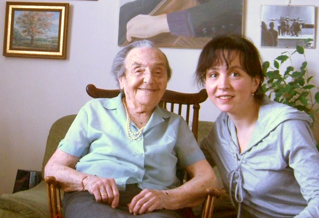

Alice Herz-Sommer
In the midst of horror, she saved many souls with the shield of music

"Every day, life is beautiful."
Alice was the world's oldest living pianist at the age of 109. Also, the world's second oldest Holocaust survivors. While in Theresienstadt concentration camp, she kept playing the piano and saved many souls.
Alice's life:
- 1903 - Born in Prague
- Childhood - Grew up in German-speaking Czech-Jewish assimilated society, where she met Mahler, Kafka, Freud.
- 1919 - At the age of 16, admitted in Prague German Conservatory of Music
- The 1920s - A finalist in the Vienna International Piano Competition
- Concert pianist - Alice had enjoyed a successful concert career, until the occupation of Czechoslovakia
- 1931 - Married Leopold Sommer, a businessman and an amateur violinist
- 1937 - Give birth to a son, Stepan
- 1942 - Her mother was deported to Terezin from where shesent to a death camp
- 1943 - Herz-Sommer family were dispatched to Terezin* where she gave more than 100 concerts, including recitals of all the 24 Etudes of Chopin by heart.
- 1944 - Leopold was sent to Auschwitz then to Dachau, where he died of typhus, a month before liberation
- 1949 - Alice and Stepan emigrated to Israel to escape from open anti-Semitism in Prague. She got united with her surviving family, including her twin sister, Mariana. She taught many years at the Ubin Academy of Music*
- 1986 - Moved to London to join her son, built his career there as an eminent cellist
- 2001 - Stepan died of an aneurysm. Alice was hospitalized for weeks before she gradually began to recover from the shock and sadness
- 20xx - Kept reworking her piano technique, after advancing age had immobilized one finger on each hand
- 2014 - Died at the age of 110 in London
More about Alice
- Watch a short video of her inspirational life.
- Read this book, beautifully narrating her life with a profound love for music
- Of some 140,000 Jewish who passed through Terezin nearly 90,000 were deported to almost certain death, some 33,000 died in Terezin itself, according to the United States Holocaust Memorial Museum
- Now the Jerusalem Academy of Music and Dance.